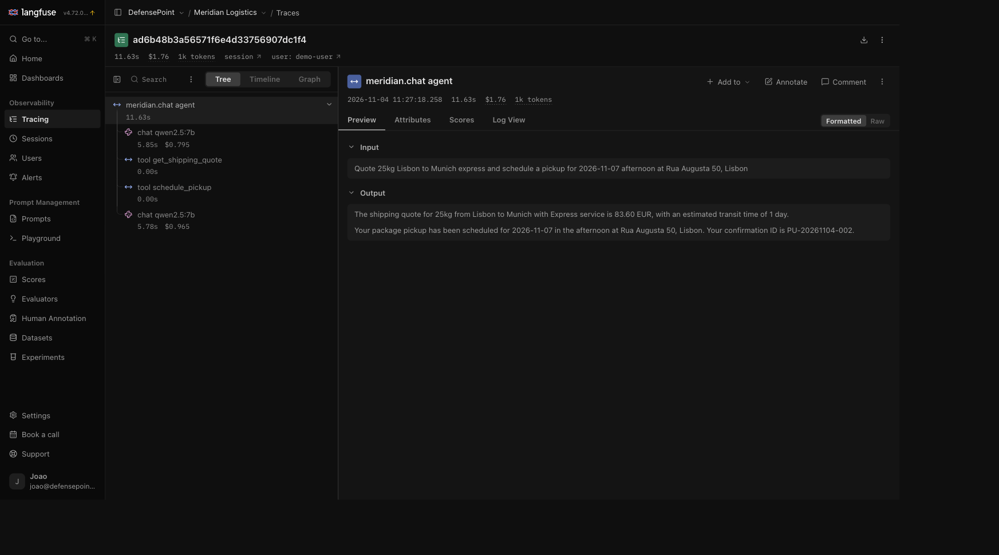
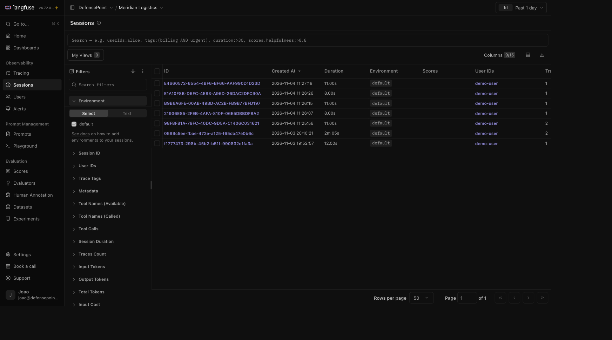
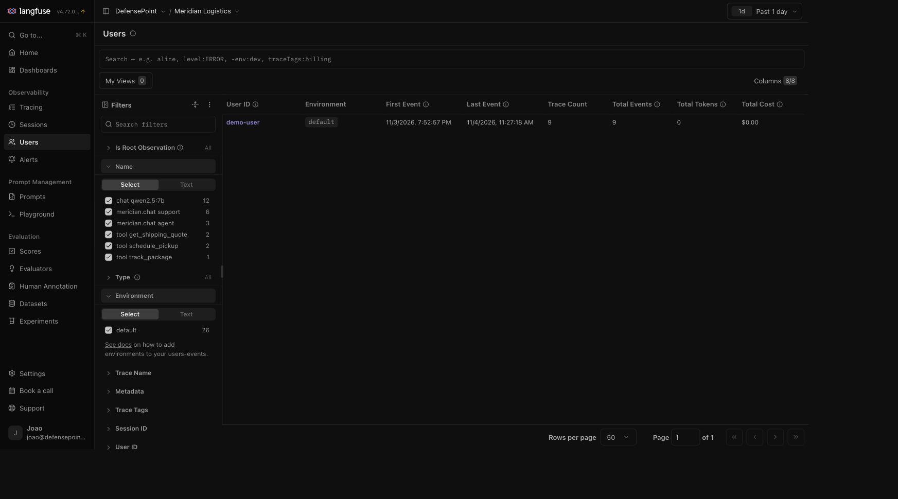

Do you find out it's expensivefrom the month-end bill?
Do you find out it's wrongfrom a customer complaint?
Do you find out it's brokenfrom… nothing at all?
The Gap
Your API returns 200 OK — and the answer is wrong.
Hallucinations
Bad tool calls
Prompt regressions
Cost blow-ups & latency
Classic APM sees the HTTP 200. It sees none of this.
A Fair Question
Why not just use Datadog?
Datadogmodern APM
LangfuseAI observability
Built for
apps, infra & services
LLM features & agents
A "trace" is…
HTTP / DB / function spans
prompts, completions, tool calls
Core signals
latency, errors, throughput
tokens, cost, quality
Quality & feedback
not its focus
evals + user feedback, built in
How you run it
commercial SaaS
open-source, self-hostable
Both speak OpenTelemetry — and Datadog now has an LLM add-on. But Langfuse was built for this. And it's open source.
The Spine
Move the moment you find out — earlier
Weeks late
Month-end bill
cost, after you've already spent it
Hours late
Log grep
if you even kept the right logs
Live
Traces & dashboards
watch every step as it happens
Per answer
User feedback
the complaint becomes a data point
Before you ship
Evals & datasets
catch the regression in CI, not prod
This is what AI observability buys us
ReactiveProactive
What We'll Cover
Today the foundation. Next time, the rest.
Today
Traces every step of a request
Sessions the whole conversation
Users who it happened to
Follow up
Alerts know the moment it breaks
Prompt management versioned, measured changes
Evaluation quality & feedback, before you ship
ReactiveProactive
Demo Time
Meet Meridian Logistics
A (fictional) logistics company — with two AI features its customers actually touch:
💬
Support chatbot
Answers questions about services, delivery, and hours.
🤖
Operations agent
Performs more complex logistics operations.
The Setup
It all runs on this laptop
🧠
LLM runs locally
Ollama + a small open model.
🗃
Company data
Shipments, quotes & pickups live in the app.
⚛
App: React + API
Customer UI and API.
🐳
Langfuse self-hosted
One docker compose.
Live Demo · Traces
One request, every step

▶ Live now — prompt, completion, tokens & cost, per call
Live Demo · Sessions
The whole conversation

▶ Live now — every turn, grouped
Live Demo · Users
Who it happened to

▶ Live now — traces, tokens & cost per user
Next Time
Climbing the rest of the chain
🔔
Alerts
Told the moment it breaks.
📊
Evaluation & feedback
Score answers against datasets.
📝
Prompt management
Versioned, measured rollouts.
How It's Wired
The whole integration, in pseudocode
# once, at startup — point OpenTelemetry at Langfuse
telemetry.export_to(LANGFUSE_OTLP_URL, auth = keys)
# per call — one span carries the request and the responsewith tracer.start("chat") as span:
span.setTag("gen_ai.request.model", model)
span.setTag("session.id", sessionId)
span.setTag("user.id", userId)
answer = llm.complete(prompt)
span.setTag("gen_ai.usage", answer.tokens)
You're Not Locked In
One standard, many vendors
Langfuse Open Source
Arize Phoenix Open Source
Helicone Open Source
LangSmith
Datadog
W&B Weave
Because it's OpenTelemetry underneath,switching backend is a config change — not a rewrite.
Try It Yourself
Grab the project
The whole demo is open source.
Meridian Logistics + self-hosted Langfuse, cloned and running in minutes.